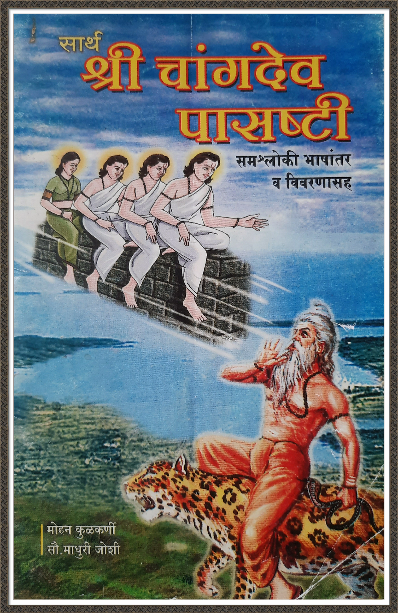

📚 श्री संचारेश्वर ग्रंथसंपदा
🙏 "श्री संचारेश्वर चरित्रामृत" साखळी पारायणात सहभागी होण्यासाठी संपर्क करा: 📞 हृषीकेश गुरु :
9763123412
| 📞 नवीन कुळकर्णी :
9833746454
श्री संचारेश्वर चरित्रामृत पोथी
संचारेश्वर पंचपदी
संचारेश्वर बावणी
श्री दत्तपाठ
अष्टोत्तरशत् नामावली
आत्मषटक भजगोविन्दम्
संचारेश्वर गीता
संचारेश्वर भजनगंगा
सामुदायिक नित्य उपासना
श्री भावार्थ गुरुगीता

श्री चांगदेव पासष्टी
वार्षिक उत्सव
व्हिडिओ संग्रह
ऑडिओ संग्रह
फोटो संग्रह
संपर्क